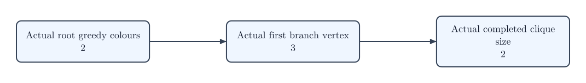
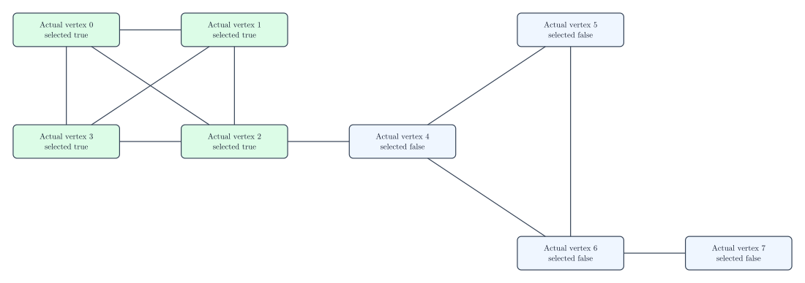
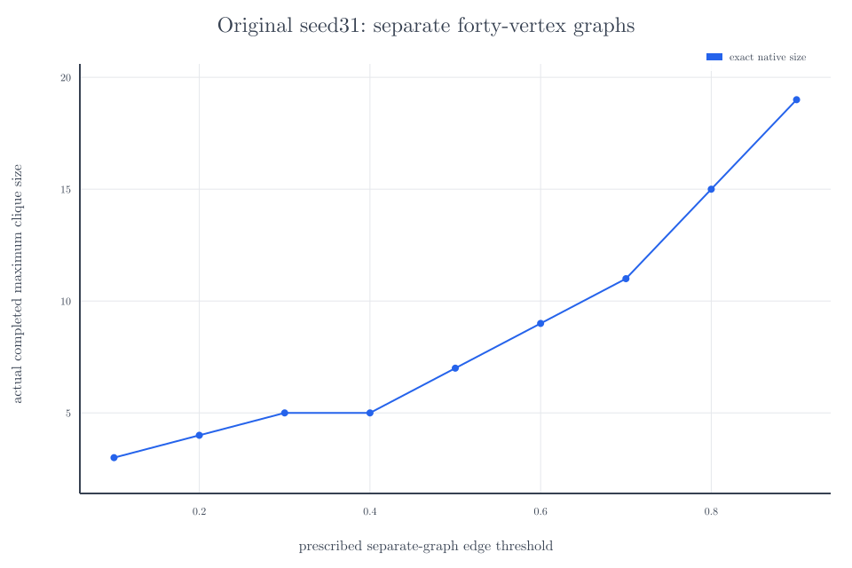
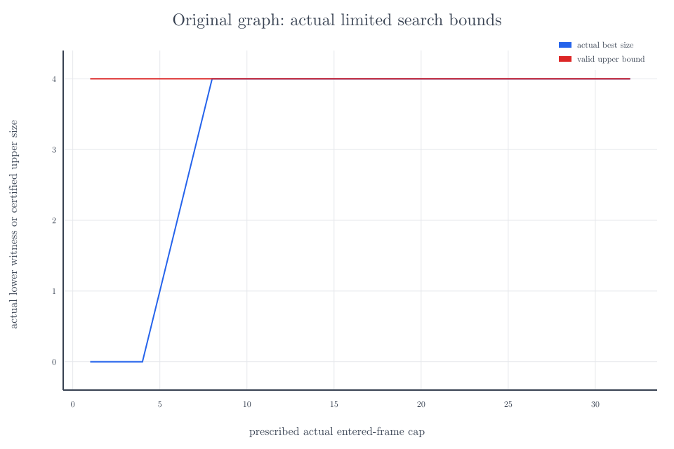

Maximum clique by colouring bounds
Abstract
Finding a largest mutually adjacent vertex set is an exponential search problem in general. A proper colouring of the remaining candidates bounds how many more vertices can enter a clique. We expose datamunge’s actual greedy-colouring branch-and-bound search, retain the original graph and forty-vertex density experiment, and distinguish completed exact results from explicitly limited search witnesses and bounds.
Why a colouring bounds the search
Maintain an active clique R and candidates P adjacent to every member of R. Any child adds one candidate v and intersects the remaining prefix with its neighbours, preserving the clique/common-neighbour invariant. Greedy first-fit colouring partitions P into independent classes. A clique contains at most one vertex from each class, so k classes give the valid upper bound R+k, even when the colouring uses more than the minimum number of colours.
The actual producer groups vertices by increasing colour, then branches in reverse group order. At a current vertex with colour c, every unprocessed prefix vertex has colour at most c. If R+c cannot exceed the best clique already found, prune the complete remaining frame. Otherwise schedule a child using that vertex and its actual adjacent prefix. Leaves replace best only when strictly larger. Induction over the exhaustive/pruned search proves exactness when every frame is completed; equal-size alternatives need not be enumerated.
The native algorithm retains this fixed candidate/first-fit rule and legacy tie order. Its public historical name max_clique_dyn does not mean it implements every degree/order refinement of the published MaxCliqueDyn method. An explicit frame stack preserves the original recursive continuation order without consuming a C++ recursive call stack.
A tiny cycle: colour two, never clique four
A four-cycle has a proper two-colour root assignment, so its maximum clique is at most two. The actual search finds a two-vertex witness and then cuts off frames whose bound can no longer improve it. The diagram reads the actual root colour count, first branch and completed result size; the table lists actual greedy order/bounds.
#include <dm/dm.hpp>
int main() {
std::filesystem::create_directories("build");
auto t =
dm::algorithms::max_clique_trace(4, {{1, 3}, {0, 2}, {1, 3}, {0, 2}});
auto &root = t.nodes.front();
std::print("| actual root order position | actual vertex | actual one-based colour bound |\n| ---: | " "---: | ---: |\n");
for (std::size_t i = 0; i < root.order.size(); ++i)
std::print("| {} | {} | {} |\n", i, root.order[i], root.colours[i]);
dm::graphics::Diagram d;
d.node("bound", {0, 0},
std::format("Actual root greedy colours\n{}", root.colours.back())).node("branch", {6, 0}, std::format("Actual first branch vertex\n{}", t.decisions.front().vertex)).node("result", {12, 0}, std::format("Actual completed clique size\n{}", t.analysis.clique.size())).edge("bound", "branch").edge("branch", "result");
d.save_svg("build/max_clique_tiny.svg");
}| actual root order position | actual vertex | actual one-based colour bound |
|---|---|---|
| 0 | 0 | 1 |
| 1 | 2 | 1 |
| 2 | 1 | 2 |
| 3 | 3 | 2 |

Retain the original eight-vertex graph
The original listed fixture contains a4-clique0,1,2,3, a triangle4,5,6, a bridge2–4 and a pendant7 listed only as7→6. The canonical model validates every neighbour first, ignores self entries and takes the symmetric union of listed edges. Thus the pendant is undirected even though its original list entry is asymmetric. Duplicate listed edges do not create parallel edges.
The diagram uses the native normalization helper, so it displays the actual graph solved rather than losing an asymmetrically listed edge by filtering only u<v in the raw input. Highlighted membership is the actual completed maximum clique. A strict first-maximum rule selects one witness and does not promise a lexicographically smallest maximum clique in arbitrary tie cases.
#include <dm/dm.hpp>
int main() {
std::filesystem::create_directories("build");
auto input = dm::algorithms::max_clique_demo_graph();
auto t = dm::algorithms::max_clique_trace(8, input);
auto graph = dm::algorithms::max_clique_normalize(8, input);
std::print("| actual vertex | in actual completed maximum clique | actual normalized degree |\n| ---: | " "--- | ---: |\n");
const std::array<dm::graphics::DiagramPoint, 8> positions{
{{0, 4}, {6, 4}, {6, 0}, {0, 0}, {12, 0}, {18, 4}, {18, -4}, {24, -4}}
};
dm::graphics::Diagram d;
for (int i = 0; i < 8; ++i) {
bool selected =
std::find(t.analysis.clique.begin(), t.analysis.clique.end(), i) !=
t.analysis.clique.end();
std::print("| {} | {} | {} |\n", i, selected, graph[i].size());
dm::graphics::DiagramNodeStyle style;
if (selected)
style.fill = {220, 252, 231};
d.node(std::to_string(i), positions[i],
std::format("Actual vertex {}\nselected {}", i, selected), style);
}
for (int u = 0; u < 8; ++u)
for (int v : graph[u])
if (u < v)
d.link(std::to_string(u), std::to_string(v));
d.save_svg("build/max_clique_original.svg");
}| actual vertex | in actual completed maximum clique | actual normalized degree |
|---|---|---|
| 0 | true | 3 |
| 1 | true | 3 |
| 2 | true | 4 |
| 3 | true | 3 |
| 4 | false | 3 |
| 5 | false | 2 |
| 6 | false | 3 |
| 7 | false | 1 |

Original seeded forty-vertex density study
Retain one mt19937_64 seed31 stream across thresholds10,20,...90. For each separately generated forty-vertex graph, draw rng()%100 for every upper-triangle pair and include the edge when below its threshold. Continue the stream rather than reseeding or reusing one set of latent edge uniforms. The nominal thresholds therefore describe separate samples, not a nested process of adding edges to one graph. Their observed maximum sizes need not be monotone in general.
Each plotted size is a completed exact native search. The table also reports actual edge counts, entered frames and selected adjacency-test counts. They measure this one stream/model, without a general average-case complexity or scalability guarantee for arbitrary dense graphs.
#include <dm/dm.hpp>
int main() {
std::filesystem::create_directories("build");
auto rows = dm::algorithms::max_clique_density_study();
std::vector<double> x, y;
std::print("| prescribed percent | actual distinct edges | completed exact search | actual maximum size " "| entered frames | actual colour adjacency tests | actual candidate adjacency tests |\n| " "---: | ---: | --- | ---: | ---: | ---: | ---: |\n");
for (auto &r : rows) {
auto &a = r.analysis;
std::print("| {} | {} | {} | {} | {} | {} | {} |\n", r.percent, a.edges,
a.complete, a.clique.size(), a.work.nodes,
a.work.colour_checks, a.work.candidate_checks);
x.push_back(r.percent / 100.);
y.push_back(a.clique.size());
}
auto p = dm::graphics::RPlot::create();
p.line(x, y, "exact native size", {37, 99, 235});
p.points(x, y, "", {37, 99, 235});
p.legend({"exact native size"}, {{37, 99, 235}});
p.x_label("prescribed separate-graph edge threshold").y_label(
"actual completed maximum clique size").title("Original seed31: separate forty-vertex graphs").save_svg("build/max_clique_density.svg");
}| prescribed percent | actual distinct edges | completed exact search | actual maximum size | entered frames | actual colour adjacency tests | actual candidate adjacency tests |
|---|---|---|---|---|---|---|
| 10 | 98 | true | 3 | 9 | 471 | 204 |
| 20 | 143 | true | 4 | 11 | 442 | 201 |
| 30 | 243 | true | 5 | 18 | 604 | 296 |
| 40 | 311 | true | 5 | 33 | 1244 | 642 |
| 50 | 399 | true | 7 | 43 | 1612 | 669 |
| 60 | 463 | true | 9 | 42 | 1983 | 674 |
| 70 | 562 | true | 11 | 100 | 6326 | 1780 |
| 80 | 641 | true | 15 | 103 | 10936 | 2061 |
| 90 | 707 | true | 19 | 39 | 3729 | 617 |

Bounded work, complete capture and input guards
All rows and neighbour ids are validated before indexing/capture. Negative n, row-count mismatch and ids outside0..n−1 throw. Dense N-square geometry and logical counts reject wrap. Runtime uses a dense adjacency matrix plus explicit active frames, with O(N^2) storage in the worst case. Search time remains exponential; colouring is a valid bound, not a polynomial-time solution to maximum clique.
An optional entered-frame limit is separate from capture. Zero disables the work cap. Before entering a child frame, an exhausted positive cap stops with complete=false. The actual best found clique is a valid lower-bound witness; the actual root greedy-colour count is a valid upper bound. An empty best witness can be honest when the cap prevents reaching any leaf. Complete results replace the upper bound by the exact found size. A node cap is not a wall-clock bound, since one frame’s colouring can itself be expensive.
Trace admission counts N original vertex slots, each listed neighbour, every actual entered-frame record and its four vector scalar snapshots, every real colour-class adjacency test record and every leaf/branch/prune event. Default logical cap is one million; zero disables it. Fields, row headers, capacities, dense matrix/frame workspace and bytes are excluded. A work stop returns the complete actual bounded history, including a branch whose child was scheduled but not entered. Capture failure instead throws without returning a prefix. Capture size can grow exponentially with visited search history.
#include <dm/dm.hpp>
int main() {
std::filesystem::create_directories("build");
auto graph = dm::algorithms::max_clique_demo_graph();
std::vector<double> x, lower, upper;
std::print("| prescribed entered-frame cap | actual entered frames | complete | actual best witness " "size | certified upper bound | captured entries |\n| ---: | ---: | --- | ---: | ---: | ---: " "|\n");
for (std::size_t cap : {1, 2, 4, 8, 16, 32}) {
auto t = dm::algorithms::max_clique_trace(8, graph, cap);
auto &a = t.analysis;
std::print("| {} | {} | {} | {} | {} | {} |\n", cap, a.work.nodes,
a.complete, a.clique.size(), a.upper_bound,
t.captured_entries);
x.push_back(cap);
lower.push_back(a.clique.size());
upper.push_back(a.upper_bound);
}
auto p = dm::graphics::RPlot::create();
p.line(x, lower, "actual best size", {37, 99, 235});
p.line(x, upper, "valid upper bound", {220, 38, 38});
p.x_label("prescribed actual entered-frame cap").y_label(
"actual lower witness or certified upper size").title(
"Original graph: actual limited search bounds").save_svg(
"build/max_clique_budgets.svg");
}| prescribed entered-frame cap | actual entered frames | complete | actual best witness size | certified upper bound | captured entries |
|---|---|---|---|---|---|
| 1 | 1 | false | 0 | 4 | 72 |
| 2 | 2 | false | 0 | 4 | 87 |
| 4 | 4 | false | 0 | 4 | 106 |
| 8 | 5 | true | 4 | 4 | 115 |
| 16 | 5 | true | 4 | 4 | 115 |
| 32 | 5 | true | 4 | 4 | 115 |

Verification and references
Native tests exhaust all1100 simple graphs through five vertices against
independent subset enumeration. They reconstruct every actual greedy
class/check, inspect node vectors, replay branch intersections and strict leaf
updates, and verify every bound cutoff and capture count. Original
clique0,1,2,3, asymmetric/self/duplicate input semantics, all work budgets
around completion, exact capture admission, ownership and complete
malformed-input guards are covered. The original density graph stream is
reproduced independently and every returned clique is checked. Existing
graph-hard regression tests remain. The shared ten-report batch passes 71 CTest
cases, 29 directly instrumented ASan/UBSan cases, 130 compiled and executed
public examples, 598/598 scoped documentation definitions and ten representative
hovers. Independent Python arbitrary-precision, hashlib, sorted-window, RNG,
polynomial, graph and full-assignment references verify 224,229 actual records.
Frozen comparisons preserve ordinary legacy outputs, including selected clique
identities, original density graphs and memetic partitions. Twelve checkout
headers and twelve identically installed headers compile independently; an
installed-header native consumer links and runs. All four complete programs and
all four native figures pass execution and visual review, and HTML/Markdown
exports preserve computed results and identical image bytes. Receipts:
build/mepml-conversion/batch-224-233/.
The algorithm uses the standard proper-colouring upper-bound principle, proved above. Published MaxCliqueDyn implementations include additional ordering refinements; the report deliberately describes this retained native fixed-order variant and its actual observations rather than attributing unimplemented refinements or broad performance claims to it.
Konc and Janezic (2007), An improved branch and bound algorithm for the maximum clique problem, MATCH58,569–590, publisher paper. Its sections2.2–2.3 describe the basic search and first-fit colour grouping; later improved ordering/dynamic bounds remain outside this retained native variant.